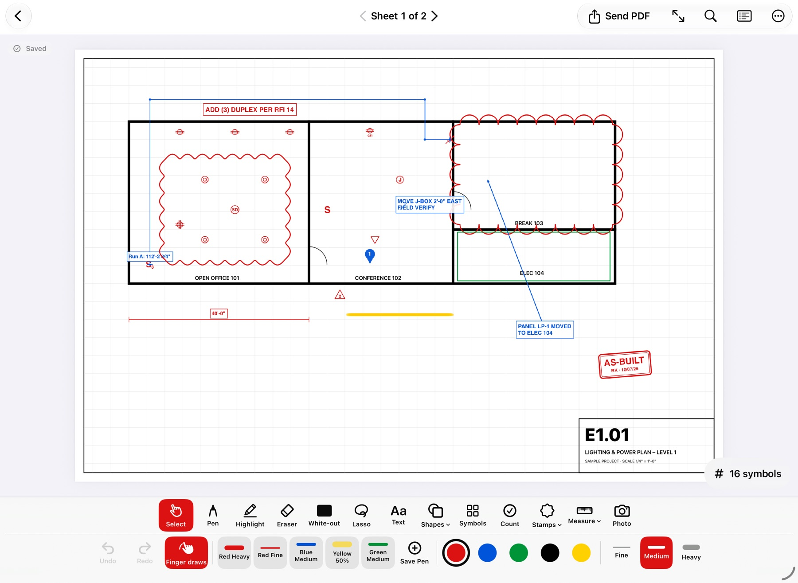
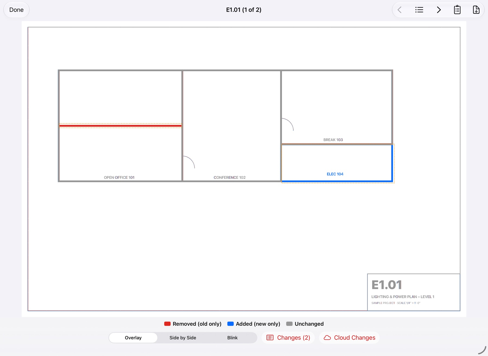
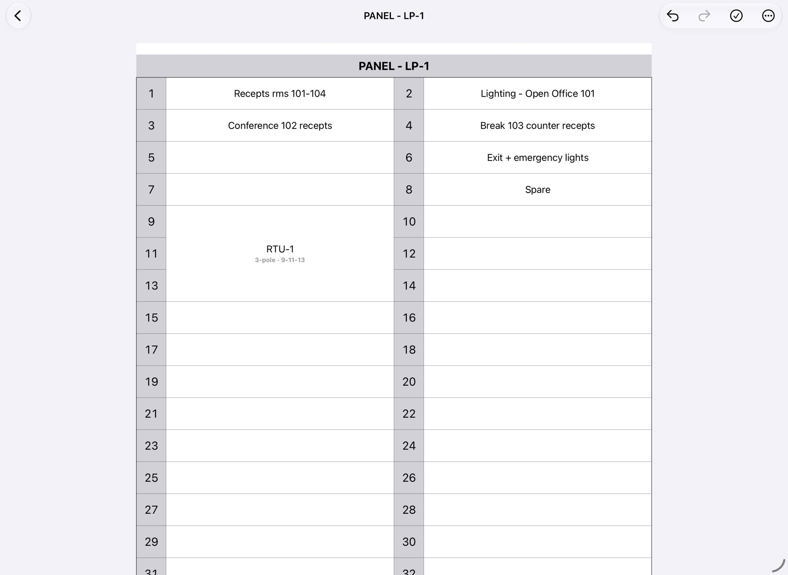
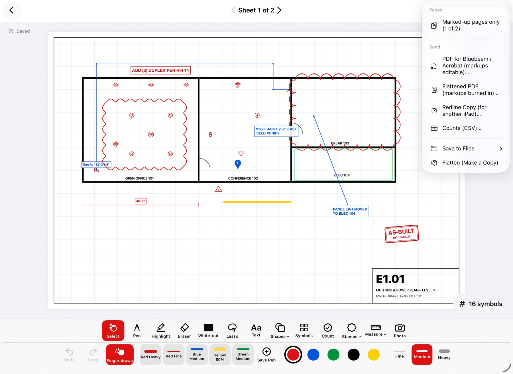

Redline fast
Apple Pencil or finger. Saved pens for one-tap colour and width, a highlighter with adjustable opacity, and text in any size.
PDF markup for the trades · iPad & iPhone
Redline your drawings on the iPad, right on the job, and send them back to the office the way the office wants them.
Questions? support@roughinredlines.com

Built for foremen with a Pencil, a finger, or gloves on.
Apple Pencil or finger. Saved pens for one-tap colour and width, a highlighter with adjustable opacity, and text in any size.
Receptacles, switches, fixtures, fire alarm, low voltage, security, plumbing, HVAC and sprinkler symbols. Size it once, then Copy & Place.
Tap each device on the print. Running totals by sheet and for the whole set, on the PDF and in a spreadsheet.
Set the drawing scale or calibrate off a known dimension, then measure distances and conduit runs in feet and inches.
Cover an old wall, door or note on the drawing, then draw what's really there on top.
Drop a numbered photo pin where you took it. Photos go out with the PDF.
See what the designers changed before you build it.
Open the new set, pick the old one, and Rough-In lines up every sheet by its number. Removed work shows red, new work blue.

Odd circuits left, even right, just like the card on the panel door.

Type or tap a description, combine circuits into 2- and 3-pole breakers, mark spares. Room numbers come straight off the drawing.
One menu, whatever the office uses.

No account. No server. No signal needed.
Free to start, with Pro for the full toolkit. Pricing will be announced at launch.
Email support@roughinredlines.com to try it early on your crew.